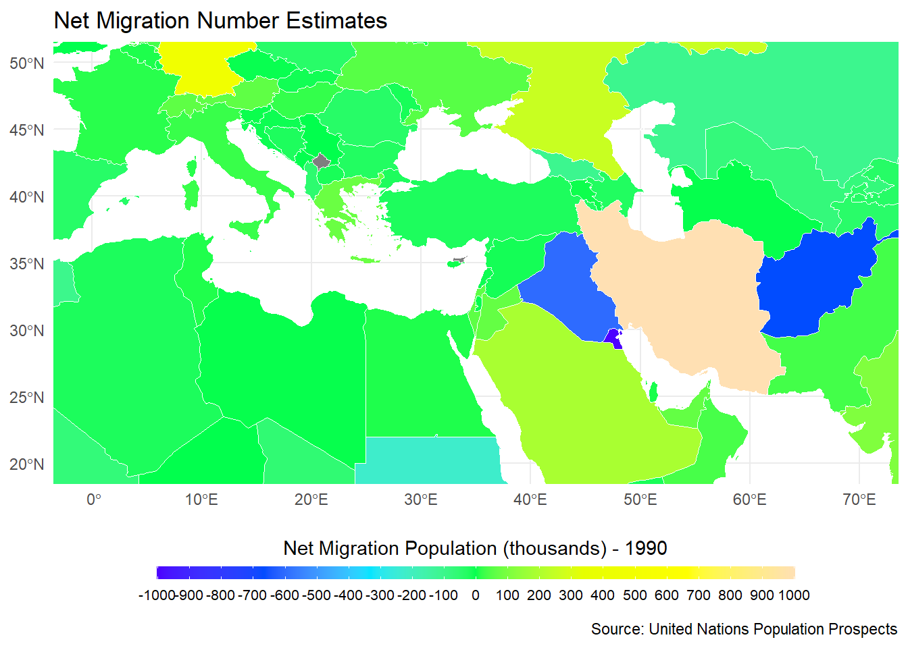
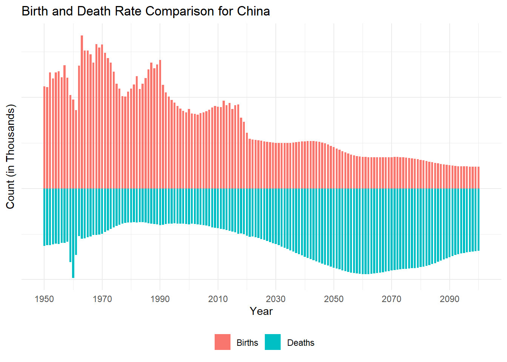
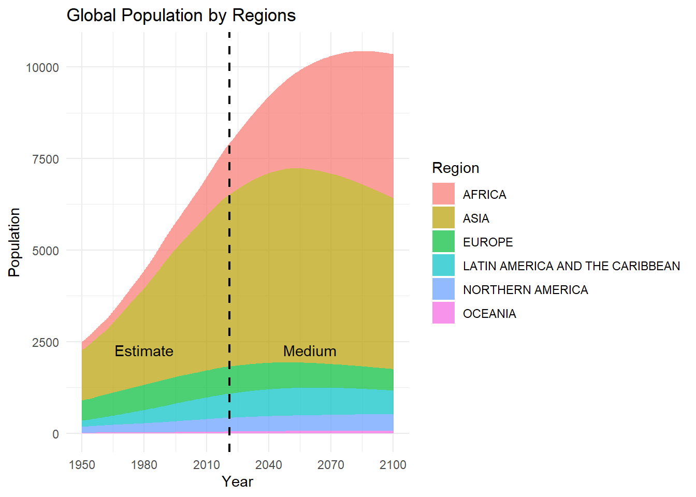
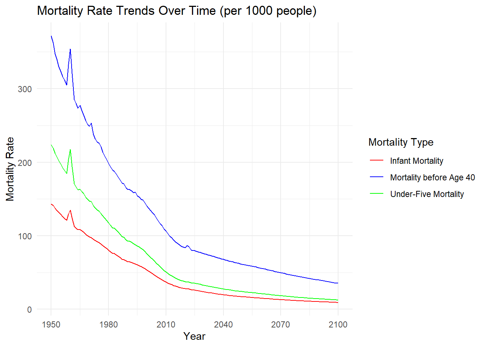
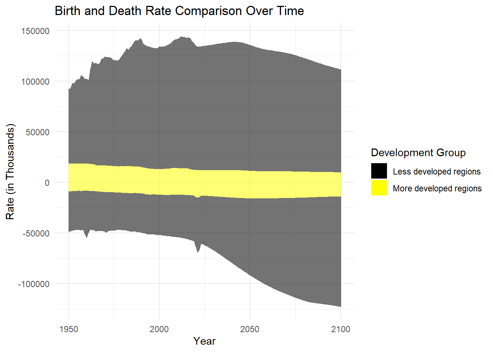
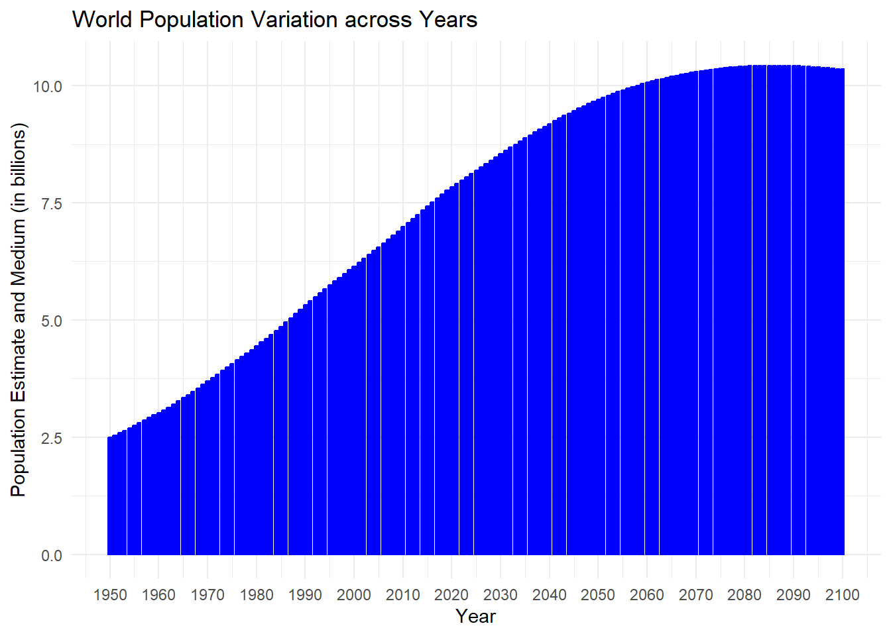

This term project provides an extensive examination of demographic variables through the use of data visualization and handling techniques. We aim to analyze and provide findings from a demographic dataset obtained from the United Nations Population Prospects. The dataset encompasses a wide range of demographic information, such as population, life expectancy, mortality rates, and more.
The project commences with data cleaning and tidying, whereby different R libraries are imported for use in data manipulation, visualization, and cleaning. The dataset, sourced from an Excel file available via a specified URL, undergoes cleaning processes to handle combined columns, skip unnecessary rows, and standardize column names.
The project extends into geographical data visualization, utilizing world maps to represent total population estimates, population density predictions, and net migration numbers for specific years and regions. The team zooms in on Turkey to investigate population density predictions ten years into the future, offering a localized perspective.
Country-specific analyses are conducted, showcasing population variation trends over the years for selected countries. Additional visualizations include pyramid plots illustrating birth and death rate comparisons for specific countries and development group comparisons, providing insights into demographic dynamics.
In addition, we conducted an in-depth examination of life expectancy, utilizing density plots and box plots to emphasize disparities between genders. The analysis focuses on total mortality rates using box plots, highlighting differences in median values across male and female cohorts.
The project concludes with global and regional perspectives on population trends. Bar charts and area charts are employed to visualize world population variations across years and global population by regions, offering a comprehensive overview of the dataset.
Data Cleaning and Tidying
In order to start coding for our project we need to load the necessary libraries for the project, including data manipulation (tidyverse, dplyr, purrr), data visualization (ggplot2), and data cleaning (janitor).
library(tidyverse) # Comprehensive data manipulation and visualization tools
── Attaching core tidyverse packages ──────────────────────── tidyverse 2.0.0 ──
✔ dplyr 1.1.3 ✔ readr 2.1.4
✔ forcats 1.0.0 ✔ stringr 1.5.0
✔ ggplot2 3.4.3 ✔ tibble 3.2.1
✔ lubridate 1.9.3 ✔ tidyr 1.3.0
✔ purrr 1.0.2
── Conflicts ────────────────────────────────────────── tidyverse_conflicts() ──
✖ dplyr::filter() masks stats::filter()
✖ dplyr::lag() masks stats::lag()
ℹ Use the conflicted package (<http://conflicted.r-lib.org/>) to force all conflicts to become errors
library(readxl) # Reading Excel files into Rlibrary(curl) # Downloading files from the internet
Warning: package 'curl' was built under R version 4.3.2
Using libcurl 8.3.0 with Schannel
Attaching package: 'curl'
The following object is masked from 'package:readr':
parse_date
library(dplyr) # Data manipulation toolkitlibrary(purrr) # Functional programming toolslibrary(stringr) # String manipulation functionslibrary(janitor) # Tools for data cleaning
Attaching package: 'janitor'
The following objects are masked from 'package:stats':
chisq.test, fisher.test
library(ggplot2) # Data visualization using Grammar of Graphics
The data set is presented in an excel sheet and there are combined columns. For example, for the first column, we should skip the first 16 rows in Excel. However, there are main categories for some columns. For example “Total Population, as of 1 January (thousands)” column is under the “Population” category and we have to skip the first 17 rows for this column.
And data has wide form of variables, such as life expectancy for gender is reported as three different column rather than one column for gender and one for life expectancy.
The demographic data is obtained from an Excel file accessible via a specified URL. The file is downloaded utilizing the curl_download function, and the sheets of interest are identified.
# Specify the web address of the Excel fileurl <-"https://population.un.org/wpp/Download/Files/1_Indicators%20(Standard)/EXCEL_FILES/1_General/WPP2022_GEN_F01_DEMOGRAPHIC_INDICATORS_COMPACT_REV1.xlsx"data <-"WPP2022_GEN_F01_DEMOGRAPHIC_INDICATORS_COMPACT_REV1.xlsx"
curl_download(url, destfile = data)
read_clean, a custom function, is utilized to extract and clear data from individual sheets. Using clean_names and map_df, the final data is combined into a single data frame and standardized column names are established.
# Downloaded sheetssheets <-excel_sheets(data)# Select the first two sheetsselected_sheets <- sheets[1:2]# Function to read and clean data from a sheetread_clean <-function(file_path, sheet) {read_excel(file_path, sheet = sheet, skip =16, col_types ="text")}# Read and clean selected sheets, then bind them into a single data frameraw_data <-map_df(selected_sheets, ~read_clean(data, .)) |>clean_names()
Subsequently, a recognizable layout was obvious with the emergence of subheadings, effectively identifying countries, regions, and subregions. Particularly, the sections classified under these subheadings do not include specific data; instead, they serve as informative placeholders.
In this stage, we filter out rows with a specific type (‘Label/Separator’).
# Creating a new DataFrame without rows where 'type' is 'Label/Separator'raw_data_wo_ls <-subset(raw_data, type !="Label/Separator")
We also convert population columns to numeric format and calculate the rate of change between January 1 and July 1 populations. The resulting data frame, sorted_data, is organized by year for further analysis.
#change required columns to numericraw_data_wo_ls$total_population_as_of_1_january_thousands <-as.numeric(raw_data_wo_ls$total_population_as_of_1_january_thousands)raw_data_wo_ls$total_population_as_of_1_july_thousands <-as.numeric(raw_data_wo_ls$total_population_as_of_1_july_thousands)# Group by year and arrange by yearsorted_data <- raw_data_wo_ls |>mutate(rate_of_change = ((total_population_as_of_1_january_thousands - total_population_as_of_1_july_thousands) / total_population_as_of_1_january_thousands) *100) |>select(rate_of_change, everything()) |>group_by(year) |>arrange(year) |>ungroup()
To visually explore the variation in the total population rate of change over the years, we use the ggplot2 package. A scatter plot is created according to years.
# Create a ggplot with the specified columnsggplot(sorted_data, aes(x = year, y = rate_of_change)) +geom_point() +scale_y_continuous(name ="Population Rate of Change (%)", limits =c(0, 100))+labs(title ="Variation of Total Population between 1 Jan to 1 July Over Years") +theme_minimal()+scale_x_discrete(breaks =seq(1950, 2100, by =10))+ylim(0,50)
Scale for y is already present.
Adding another scale for y, which will replace the existing scale.
After an in-depth examination of the percentage variation in populations between January 1 and July 1, it became apparent that, aside from a few outliers, the rate of change across the time periods is not significantly pronounced. Table formats were employed to identify outliers, pinpointing the specific years and countries where these anomalous data points emerged. This strategy enhances the understanding of events that are considered to be outliers.
library(knitr)# Find the maximum rate_of_change and corresponding detailstop5_max_rate_data <- sorted_data |>top_n(8, rate_of_change) |>rename(countr_or_region =region_subregion_country_or_area)# Print the resultformatted_table <- top5_max_rate_data[, c("countr_or_region","year", "rate_of_change")] |>kable()formatted_table
countr_or_region
year
rate_of_change
Western Sahara
1975
11.583471
Lebanon
1978
8.888104
Afghanistan
1981
7.471134
Liberia
1990
13.060938
Kuwait
1990
25.586456
Rwanda
1994
16.432032
Montserrat
2017
8.472926
Ukraine
2022
8.382443
Upon examining the values within the table, a notable observation emerges—specific dates exhibiting the highest population changes over a 6-month period align with periods of conflict, indicating a correlation with wartime events. In light of this observation, we proceeded with a data reduction process to streamline our dataset for a more focused analysis. This involved excluding specific columns that were deemed unnecessary for our current analytical objectives.
This reduction aimed to simplify the dataset, making it more manageable for subsequent analyses while retaining the essential information for our research
# Creating a new DataFrame without specific columnsraw_data_reduced <- raw_data_wo_ls |>select(-contains("_as_of_1_january"), -index,-iso2_alpha_code,-sdmx_code,-parent_code,-notes,-location_code )total_na_count <-sum(is.na(raw_data_reduced))print(total_na_count)
[1] 7399
Upon initial analysis, the results of the total_na_count indicated the absence of 7399 missing values. However, during the exploration of the scatter plot, a warning surfaced, indicating the presence of rows with missing values about 31 thousand. This discrepancy prompted a closer examination of the data quality.
Further investigation revealed that the missing values were not explicitly defined as ‘NA.’ Instead, an unconventional placeholder, represented by three dots (“…”), was used to indicate missing data in the initial untidy dataset.
To rectify this issue, we took a two-step approach:
Replacing “…” with NA: All occurrences of the three dots (“…”) in the dataset were replaced with the standard ‘NA’ representation. This step was crucial for ensuring uniformity and accuracy in identifying missing values across the dataset.
Conversion to Numeric: Subsequently, we converted all related columns with numerical values from character (string) to numeric format. This conversion ensured that the data, now with consistent missing value representation, could be accurately processed and analyzed.
We filter the data by level, including Country/Area, Sub-Region, Region, Development Group, and Income Group, in order to conduct a more comprehensive analysis. A distinct data frame is utilized to maintain each filtered dataset, which facilitates targeted analyses of particular demographic categories.
# Filtering and Creating New Columns for Country/Area Level:country_area_level_filtered <- raw_data_rounded |>filter(type =="Country/Area") |>mutate(country_and_area = region_subregion_country_or_area) |>select(-region_subregion_country_or_area) |>relocate("country_and_area", .after ="variant")# The data is filtered to include only entries with the type "Country/Area."# A new column 'country_and_area' is created, containing information from 'region_subregion_country_or_area.'# Unnecessary columns are deselected, and 'country_and_area' is relocated after the 'variant' column.# Filtering and Creating New Columns for Sub-Region Level:sub_region_level_filtered <- raw_data_rounded |>filter(str_detect(type, regex("region", ignore_case =FALSE))) |>mutate(sub_region = region_subregion_country_or_area) |>select(-region_subregion_country_or_area) |>relocate("sub_region", .after ="variant")# Filtering and Creating New Columns for Region Level:region_level_filtered <- raw_data_rounded |>filter(str_detect(type, regex("Region", ignore_case =FALSE))) |>mutate(region = region_subregion_country_or_area) |>select(-region_subregion_country_or_area) |>relocate("region", .after ="variant")# Filtering and Creating New Columns for Development Group Level:development_group_level_filtered <- raw_data_rounded |>filter(str_detect(type, regex("Development Group", ignore_case =FALSE))) |>mutate(development_group = region_subregion_country_or_area) |>select(-region_subregion_country_or_area) |>relocate("development_group", .after ="variant")# Filtering and Creating New Columns for Income Group Level:income_group_level_filtered <- raw_data_rounded |>filter(str_detect(type, regex("Income Group", ignore_case =FALSE))) |>mutate(income_group = region_subregion_country_or_area) |>select(-region_subregion_country_or_area) |>relocate("income_group", .after ="variant")
Data Visualization
The inital data has been successfully transformed from a human-readable format to a machine-readable format. During this process, it was crucial to perform cleaning and tidying operations to enhance the quality of the data. Subsequently, we can proceed with visualizing our regular dataframes for a more comprehensive analysis.
Warning: package 'sf' was built under R version 4.3.2
Linking to GEOS 3.11.2, GDAL 3.7.2, PROJ 9.3.0; sf_use_s2() is TRUE
library(rnaturalearth)
Warning: package 'rnaturalearth' was built under R version 4.3.2
library(rnaturalearthdata)
Warning: package 'rnaturalearthdata' was built under R version 4.3.2
Attaching package: 'rnaturalearthdata'
The following object is masked from 'package:rnaturalearth':
countries110
library(dplyr)library(highcharter)
Warning: package 'highcharter' was built under R version 4.3.2
Registered S3 method overwritten by 'quantmod':
method from
as.zoo.data.frame zoo
We commence the data visualization process by utilizing global mapping. In the primary dataset, ISO3 alpha codes associated with each country are marked as variables in a dedicated column. By employing the merge function in the “rnaturalearth” package, we can effortlessly combine these codes over the worldwide map. Geographical data visualizations are presented, utilizing world maps to represent total population estimates, population density predictions, and net migration numbers for specific years and regions.
# Replace 'your_year' with the specific year you want to map (e.g., 2021)your_year <-2021# Filter the data frame for the specific yearfiltered_data <- country_area_level_filtered |>filter(year == your_year) |>mutate(total_population_in_millions = (total_population_as_of_1_july_thousands *1000) /1000000)# Load world map dataworld <-ne_countries(scale ="medium", returnclass ="sf")# Merge world map data with population dataworld_population <-merge(world, filtered_data, by.x ="iso_a3", by.y ="iso3_alpha_code", all.x =TRUE)# Set custom limits and breaks for the color scalecustom_limits <-c(50, 1000)custom_breaks <-seq(50, 1000, by =50)# Create the ggplot world mapggplot(world_population) +geom_sf(aes(fill = total_population_in_millions), color ="white", size =0.2) +scale_fill_gradientn(name =paste("Total Population (millions) -", your_year), colors =rainbow(10),limits = custom_limits,oob = scales::squish,breaks = custom_breaks) +labs(title ="World Population Estimates",caption ="Source: United Nations Population Prospects") +guides(fill =guide_colorbar(title.position ="top", keywidth =2, keyheight =10, label.position ="bottom", label.theme =element_text(size =8))) +theme_minimal() +theme(legend.position ="bottom", # Position the legend at the bottomlegend.box ="horizontal", # Arrange the legend items horizontallylegend.direction ="horizontal", # Display the legend items horizontallylegend.title.align =0.5, # Center the legend titlelegend.key.size =unit(0.25, "cm"),legend.key.width =unit(2.5, "cm"))
To focus specifically on Turkey and investigate population density predictions for the next ten years, we can utilize the “coord_sf” function. By implementing this function, we can narrow our visual representation to the geographical coordinates and spatial data relevant to Turkey, allowing for a more detailed examination of population density projections in the specified timeframe.
# Replace 'your_year' with the specific year you want to map (e.g., 2030)your_year <-2034# Filter the data frame for the specific yearfiltered_data <- country_area_level_filtered |>filter(year == your_year)# Load world map dataworld <-ne_countries(scale ="medium", returnclass ="sf")# Merge world map data with population dataworld_population <-merge(world, filtered_data, by.x ="iso_a3", by.y ="iso3_alpha_code", all.x =TRUE)# Set custom limits and breaks for the color scalecustom_limits <-c(50, 550)custom_breaks <-seq(50, 550, by =50)# Create the ggplot world mapggplot(world_population) +geom_sf(aes(fill = population_density_as_of_1_july_persons_per_square_km), color ="white", size =0.2) +scale_fill_gradientn(name =paste("Population Density (persons per sq. km) -", your_year), colors =rainbow(10),limits = custom_limits,oob = scales::squish,breaks = custom_breaks) +labs(title ="Population Density Map",caption ="Source: United Nations Population Prospects") +guides(fill =guide_colorbar(title.position ="top", keywidth =2, keyheight =10, label.position ="bottom", label.theme =element_text(size =8))) +theme_minimal() +theme(legend.position ="bottom", # Position the legend at the bottomlegend.box ="horizontal", # Arrange the legend items horizontallylegend.direction ="horizontal", # Display the legend items horizontallylegend.title.align =0.5, # Center the legend titlelegend.key.size =unit(0.25, "cm"),legend.key.width =unit(2.5, "cm"))+coord_sf( xlim =c(-20, 70), ylim =c(10, 60)) # Adjust xlim and ylim for the desired region
Additionally, recalling the scatter plot analysis where we examined the significance of changes in the upper region between January 1 and July 1, it was observed that the most substantial deviation during this 6-month period occurred in 1990, reaching 25 percent. We attributed this anomaly to the impact of wars, specifically pinpointing the Iraq-Kuwait War. Therefore, it is very likely that there was a significant increase in immigration from the afflicted countries during this period.
In order to validate this theory, we conducted an experiment of mapping the net migration data for the year 1990 onto a global map. We restricted our investigation focus by explicitly zooming in on the region between Kuwait and Iraq. This allowed us to shed light on the migratory patterns in that area over the chosen period.
# Replace 'your_year' with the specific year you want to map (e.g., 2021)your_year <-1990# Filter the data frame for the specific yearfiltered_data <- country_area_level_filtered |>filter(year == your_year)# Load world map dataworld <-ne_countries(scale ="medium", returnclass ="sf")# Merge world map data with population dataworld_population <-merge(world, filtered_data, by.x ="iso_a3", by.y ="iso3_alpha_code", all.x =TRUE)# Set custom limits and breaks for the color scalecustom_limits <-c(-1000, 1000)custom_breaks <-seq(-1000, 1000, by =100)# Create the ggplot world mapggplot(world_population) +geom_sf(aes(fill = net_number_of_migrants_thousands), color ="white", size =0.2) +scale_fill_gradientn(name =paste("Net Migration Population (thousands) -", your_year), colors =topo.colors(7),limits = custom_limits,oob = scales::squish,breaks = custom_breaks) +labs(title ="Net Migration Number Estimates",caption ="Source: United Nations Population Prospects") +guides(fill =guide_colorbar(title.position ="top", keywidth =2, keyheight =10, label.position ="bottom", label.theme =element_text(size =8))) +theme_minimal() +theme(legend.position ="bottom", # Position the legend at the bottomlegend.box ="horizontal", # Arrange the legend items horizontallylegend.direction ="horizontal", # Display the legend items horizontallylegend.title.align =0.5, # Center the legend titlelegend.key.size =unit(0.25, "cm"),legend.key.width =unit(2.5, "cm"))+coord_sf( xlim =c(0, 70), ylim =c(20, 50)) # Adjust xlim and ylim for the desired region

Based on the provided map, it is clear that approximately 2 million people escaped from Iraq and Kuwait and seek protection in other countries during the war between the two states. Iran is the main destination for a large number of immigrants, particularly during the Iraq-Kuwait War, since it is a nearby country that has taken in a big amount of displaced people.
Due to the diverse nature of this database, it provides the potential to create multiple graphic representations and examine different aspects of the data through visualization. Our ability to adapt and utilize various visualization methods, including charts, graphs, and maps, enables us to get valuable insights into diverse facets of the given information.
Consequently, we have created an interactive line plot using the ‘highcharter’ library to examine the changes in total population over time for several nations, including the five permanent members of the United Nations and Turkey. This study encompasses the period from 1950 to 2100, providing a thorough examination of demographic shifts over an extended time frame.
# Select specific countries to visualizeselected_countries <-c("Türkiye", "China", "United States of America", "Russian Federation", "United Kingdom", "France")filtered_data <- country_area_level_filtered |>filter(country_and_area %in% selected_countries) |>mutate(total_population_in_millions = (total_population_as_of_1_july_thousands *1000) /1000000)hc <- filtered_data %>%hchart('line', hcaes(x = year, y = total_population_in_millions, group = country_and_area) ) %>%hc_title(text ="<b>Population Variation Across Years</b>",margin =20,align ="left",style =list(color ="#22A884", useHTML =TRUE) )%>%hc_xAxis(title =list(text ="Year")) %>%hc_yAxis(title =list(text ="Total Population (in Millions)"))hc
According to the depicted graph, considering the current total population status of the four countries aside from the United States and China, it can be inferred that minor fluctuations may occur over the next 70 years, but significant changes are not anticipated. Conversely, the American population is projected to persist in its growth trajectory, converging towards approximately 400 million. The most noteworthy transformation is anticipated in the Chinese population, where the current figure of around 1.5 billion is expected to decrease by nearly half, reaching approximately 750 million. This forecast suggests a substantial shift in demographic trends over the specified timeframe.
In order to conduct a more thorough study about the Chinese population, a pyramid-shaped chart has been created using the birth and death rate variables from the data frame.
# Select a specific country to visualizeselected_country <-"China"filtered_data <- country_area_level_filtered |>filter(country_and_area == selected_country)# Create a pyramid plotggplot(filtered_data, aes(x = year, y = births_thousands, fill ="Births")) +geom_bar(stat ="identity", position ="identity", width =0.7) +geom_bar(aes(x = year, y =-total_deaths_thousands, fill ="Deaths"), stat ="identity", position ="identity", width =0.7) +scale_y_continuous(labels = abs) +# Use positive values for labelslabs(title =paste("Birth and Death Rate Comparison for", selected_country),x ="Year",y ="Count (in Thousands)",fill ="Type") +theme_minimal() +theme(axis.text.y =element_blank(), # Hide y-axis labelsaxis.ticks.y =element_blank(), # Hide y-axis tickslegend.title =element_blank(), # Hide legend titlelegend.position ="bottom") +# Move legend to the bottomscale_x_continuous(breaks =seq(1950, 2100, by =20)) # Set custom breaks for the x-axis

As depicted in the Birth and Death Rate Comparison chart for China, there is a notable trend indicating that death rates are projected to be approximately twice as high as birth rates in the future. This dynamic forecasts a consistent population decline over time. A closer examination of the graph reveals historical peaks in death rates for China, notably occurring between 1959 and 1961, with the highest death rate observed in 1960.
This particular time frame aligns with the infamous China’s Great Leap Famine, during which approximately 55 million people succumbed to hunger over the course of these three years.
Similarly, a pyramid-shaped chart was created to compare the birth and death rates in Turkey and examine the projected demographic trends. Projections indicate that the current younger profile of the population will steadily decrease after 2030, as the number of births decreases and mortality rates stabilize. This shift demonstrates a decrease in population growth and a corresponding tendency of aging, matching the demographic patterns seen in present-day European countries.
Furthermore, an examination of Turkey’s historical data uncovers surges in mortality rates for the years 2019 to 2021. Significantly, this timeframe coincides with the worldwide repercussions of the Covid-19 pandemic, which have affected population trends and led to increased death rates at that period.
# Select a specific country to visualizeselected_country <-"Türkiye"filtered_data <- country_area_level_filtered |>filter(country_and_area == selected_country)# Create a pyramid plotggplot(filtered_data, aes(x = year, y = births_thousands, fill ="Births")) +geom_bar(stat ="identity", position ="identity", width =0.7) +geom_bar(aes(x = year, y =-total_deaths_thousands, fill ="Deaths"), stat ="identity", position ="identity", width =0.7) +scale_y_continuous(labels = abs) +# Use positive values for labelslabs(title =paste("Birth and Death Rate Comparison for", selected_country),x ="Year",y ="Count (in Thousands)",fill ="Type") +theme_minimal() +theme(axis.text.y =element_blank(), # Hide y-axis labelsaxis.ticks.y =element_blank(), # Hide y-axis tickslegend.title =element_blank(), # Hide legend titlelegend.position ="bottom") +# Move legend to the bottomscale_x_continuous(breaks =seq(1950, 2100, by =20)) # Set custom breaks for the x-axis
An interactive box plot titled “Life Expectancy Across Countries” has been created using the Highcharter library. This plot incorporates insights obtained from birth and death statistics, as well as future predictions. The purpose of this visualization is to enhance the level of sophistication in our studies by offering a thorough perspective on the patterns in life expectancy across different countries.
Warning: 'hcboxplot' is deprecated.
Use 'data_to_boxplot' instead.
See help("Deprecated")
Upon evaluating the box plot illustrating life expectancy among different countries, Turkey is shown to have a median value of 79.08 years. France has the highest median life expectancy of 83.9 years, indicating a greater life expectancy compared to other countries. Russia has the lowest median life expectancy among the observed countries, standing at 74.8 years. The fluctuations in average lifespan highlight the contrasting health and demographic circumstances that exist among various countries.
(When we look at the box plot of life expectancy across countries, Türkiye has 79.08 median value,while France has the highest median life expectancy value,83.9 and Russia has the lowest median life expectancy with 74.8.)
To further explore life expectancy dynamics, a “Life Expectancy by Gender” chart has been generated.
data3<-raw_data_rounded[,c("life_expectancy_at_birth_both_sexes_years","male_life_expectancy_at_birth_years", "female_life_expectancy_at_birth_years")]df<-data3 %>%pivot_longer(cols=c("life_expectancy_at_birth_both_sexes_years","male_life_expectancy_at_birth_years", "female_life_expectancy_at_birth_years"),names_to='life_exp_for_gender',values_to='values')f <- df %>%filter(life_exp_for_gender =="female_life_expectancy_at_birth_years") |>na.omit()m <- df %>%filter(life_exp_for_gender =="male_life_expectancy_at_birth_years") |>na.omit()b <- df %>%filter(life_exp_for_gender=="life_expectancy_at_birth_both_sexes_years") |>na.omit()hc <-hchart(density(b$values), type ="area", color ="steelblue", name ="Both Sexes" ) %>%hc_add_series(density(f$values), type ="area",color ="#B71C1C", name ="Female" )%>%hc_add_series(density(m$values), type ="area",color='orange',name ="Male" )%>%hc_title(text ="<b>Life Expectancy by Gender</b>",margin =20,align ="left",style =list(color ="#22A884", useHTML =TRUE) )hc
According to the study of the density plot, the distribution of life expectancy for both males and females seems to be left-skewed. Although there is a little imbalance, it is evident that, on average, women have a somewhat higher life expectancy than men. This observation is consistent with larger demographic trends that frequently imply a higher life expectancy for women.
(According to the density plot, the distribution of life expectancy for both men and women is left skewed. However, the average life expectancy for women seems to be slightly longer than that of men.)
Warning: 'hcboxplot' is deprecated.
Use 'data_to_boxplot' instead.
See help("Deprecated")
To investigate whether the observed higher life expectancy for women is reflected in the total death rates, a “Total Deaths by Gender” bar chart has been generated.
(buraya yorum eklersin belki)
Afterthat, we have created a chart called ‘Mortality Rate Trends Over Time (per 1000 people)’ to analyze the varying trends of mortality rates across the global population. The presentation provides a complete perspective on the long-term trend of mortality rates at a global level. The figure focuses primarily on three key mortality indicators: Infant Mortality (number of deaths per 1,000 live births among newborns), Under-five Deaths (number of deaths under the age of 5 per 1,000 live births), and Deaths Before Age 40 (number of deaths under the age of 40 per 1,000 adults).
# Define custom legend labelslegend_labels <-c("infant_mortality_rate_infant_deaths_per_1_000_live_births"="Infant Mortality","under_five_mortality_deaths_under_age_5_per_1_000_live_births"="Under-Five Mortality","mortality_before_age_40_both_sexes_deaths_under_age_40_per_1_000_live_births"="Mortality before Age 40")# Filter the datafiltered_data <- raw_data_rounded |>filter(region_subregion_country_or_area =="WORLD")# Filter data for mortality ratesmortality_data <- filtered_data[, c("year", "infant_mortality_rate_infant_deaths_per_1_000_live_births", "under_five_mortality_deaths_under_age_5_per_1_000_live_births", "mortality_before_age_40_both_sexes_deaths_under_age_40_per_1_000_live_births")]# Filter data for mortality ratesmortality_data_long <- mortality_data |>select(year, contains("mortality")) |>pivot_longer(cols =-year, names_to ="MortalityType", values_to ="Rate") |>group_by(MortalityType) # Group by MortalityType# Plot mortality rate trendsggplot(mortality_data_long, aes(x = year, y = Rate, color = MortalityType)) +geom_line() +scale_color_manual(values =c("red", "blue", "green"), name ="Mortality Type", labels = legend_labels) +labs(title ="Mortality Rate Trends Over Time (per 1000 people)",x ="Year",y ="Mortality Rate") +scale_x_continuous(breaks =seq(1950, 2100, by =30)) +theme_minimal()

The mortality trends exhibit a notable evolution across different eras. In the mid-1900s, there was a pronounced increase in mortality rates among infants and young individuals, possibly influenced by global wars during that time. However, a significant decline has been observed since the 2000s, attributed to technological advancements, improvements in healthcare systems, and an overall enhancement in the quality of life.
Moreover, in order to examine the potential correlation between a nation’s level of development and its rates of birth and death, an area chart titled “Over Time Birth and Death Rate Comparison” has been created. This graphic explicitly contrasts the patterns observed in “More developed regions” with “Less developed regions”.
# Select a specific country to visualizeselected_development_regions <-c("More developed regions", "Less developed regions")# Filter the datafiltered_data <- development_group_level_filtered |>filter(development_group %in% selected_development_regions)# Replace 'your_development_group_column' with the actual column name in your datadevelopment_group_column <-"development_group"filtered_data <- filtered_data %>%mutate(alpha_cl =ifelse(.data[[development_group_column]] =="More developed regions", 0, 0))# Define custom colorscustom_colors <-c("More developed regions"="yellow", "Less developed regions"="black")# Create an area plot with transparency for the selected development regionggplot(filtered_data, aes(x = year, fill = development_group)) +geom_area(aes(y = births_thousands, alpha = alpha_cl)) +geom_area(aes(y =-total_deaths_thousands, fill = development_group, alpha =alpha_cl)) +labs(title ="Birth and Death Rate Comparison Over Time",x ="Year",y ="Rate (in Thousands)",fill ="Development Group") +scale_fill_manual(values = custom_colors) +# Set custom colorstheme_minimal() +guides(fill =guide_legend(title ="Development Group"),alpha ="none") # Remove the alpha legend

The graph demonstrates that, throughout history and until now, the mortality and fertility rates in less developed nations are roughly five times greater than those in more developed countries. This noticeable pattern seems likely to continue in the future. Nevertheless, the projected rise in mortality rates in less developed nations can be seen as a possible sign that these populations might eventually stabilize, leading to a decline in population growth momentum.
Eventually, after incorporating all the acquired knowledge, a “World Population Variation Across Years” graphic has been produced, employing a billion population scale to visually depict the overall population variance and forecasts for the global populace in the future.
# Select a specific country to visualizeselected_regions <-"WORLD"# Filter the datafiltered_data <- raw_data_rounded |>filter(region_subregion_country_or_area %in% selected_regions) |>mutate(population_in_billions = total_population_as_of_1_july_thousands *1000/1000000000)# Create a bar chart with vertical barsggplot(filtered_data, aes(x = year, y = population_in_billions)) +geom_bar(stat ="identity", position ="identity", color ="blue", fill ="blue", width =0.7) +labs(title ="World Population Variation across Years",x ="Year",y ="Population Estimate and Medium (in billions)") +scale_x_continuous(breaks =seq(min(filtered_data$year), max(filtered_data$year), by =10)) +theme_minimal()

Over the upcoming 20 years, it is anticipated that the world population will experience about 33 percent increase compared to the current figure, reaching a total of 10 billion. To assess the distribution of this anticipated population increase at the continental level, a population density chart has been created, segmented by continents.
# Filter the datafiltered_data <- region_level_filtered |>mutate(total_population_in_millions = total_population_as_of_1_july_thousands *1000/1000000 )# Create an area chartggplot(filtered_data, aes(x = year, y = total_population_in_millions, fill = region)) +geom_area(alpha =0.7) +# Add a dashed vertical line at x = 2021geom_vline(xintercept =2021, linetype ="dashed", color ="black", linewidth =0.8) +# Add text annotations for arrowsannotate("text", x =1980, y =1800, label ="Estimate", vjust =-1) +annotate("text", x =2060, y =1800, label ="Medium", vjust =-1) +labs(title ="Global Population by Regions",x ="Year",y ="Population",fill ="Region") +scale_x_continuous(breaks =seq(1950, 2100, by =30)) +#scale_x_continuoustheme_minimal()

The estimations suggest that the most substantial contribution to global population growth will come from regions in Africa and Asia. This trend aligns with the development levels observed in these regions. The correlation between population growth and development levels underscores the complex interplay of socio-economic factors influencing demographic trends.
Conclusions
To summarize, our investigation explored worldwide demographic patterns, finding insights into life expectancy, fatality rates, and birth and mortality trends. The life expectancy distribution, which was skewed to the left, showed that women had a slightly higher average life expectancy, consistent with well-established demographic trends. The mortality rate trends have demonstrated historical changes that were influenced by global events and subsequent progress.
The comparison of birth and death rates in more and less developed regions highlights a consistent disparity, which demonstrates the complex relationship between socio-economic development and demographic indicators. The visualization depicts a notable rise in world population, mostly driven by major contributions from Africa and Asia.
The advantages of utilizing data visualization and cleaning approaches were clearly apparent during the analysis. The density plot, bar charts, and area charts offered a clarity and effortlessly understandable depiction of complicated demographic trends. The technique of tidying and cleaning data allowed a more efficient analysis procedure, ensuring both the accuracy and reliability of our findings.
To summarize, this study highlights the importance of data visualization and data cleaning in understanding complex demographic patterns. Through the utilization of visual reports, which compress complex datasets, a greater understanding of worldwide patterns is achieved.


 In this stage, we filter out rows with a specific type (‘Label/Separator’).
In this stage, we filter out rows with a specific type (‘Label/Separator’).